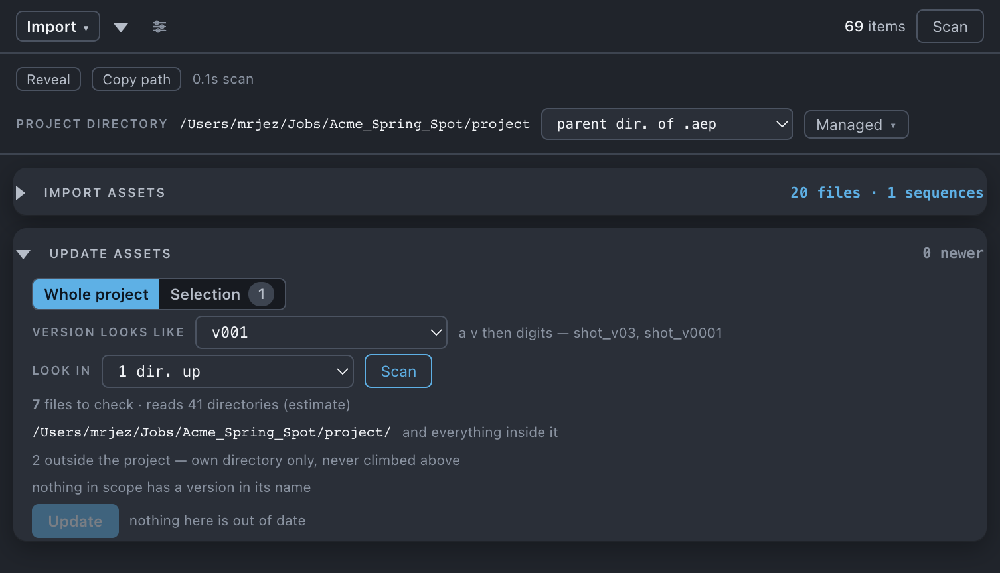

Update assets
Finds the newest numbered version of the footage your project already uses and repoints the project at it. Nothing on disk changes — only the reference.
After Effects gives you two verbs for footage that has changed. Reload re-reads the same path, for a file that was overwritten in place. Replace Footage points an item at another file you pick by hand. Neither knows what a version is. This is the third verb — version up: it reads the version number in the name of each file your project uses, looks for a higher one nearby, and repoints the item at it.
Use it when
- A vendor has delivered v04 of a shot tree and your comps are built on v03.
- Plates have come back graded, sitting in a directory beside the ones you used.
- You want to know whether anything you are working from is out of date, without changing a thing.
- One comp needs the newer plates and the rest of the project should stay exactly where it is.
What it does
Takes every footage item in scope whose name carries a version number under the scheme you chose — for a sequence, the version is read off the frame name first and off the containing directory only when the frame name carries none, so both shot_A_v03/shot_A.0001.exr and shot_A/shot_A_v03_0001.exr are understood. Climbs a set distance up from each file, searches everything below the resulting anchors, and takes the highest number it finds with the same stem and the same extension. Then it repoints your items and re-scans, because every path has changed.
What it does not do: nothing on disk is copied, moved or deleted, and the old file stays where it was. It does not match across extensions — a .mov never becomes a .mp4. It never uses the modified date to decide. And when two files tie at the same version it refuses rather than picking one.
Do it
- Press the Update tile. Above the rows a line counts what the scan found — n newer · n refused — once it has run.
- Choose Whole project or Selection.
- Set Version looks like — how a version is written in your filenames.
- Set Look in — how far up from each file the search starts.
- Read the cost line before you spend it: n files to check · reads n directories, the anchor directories it resolved, and any refusal rows.
- Press Scan. Stop is always available, and a stopped scan is reported as a partial answer rather than as good news.
- Read the rows, then press Update n files at the top right of the sheet.
Scope. Whole project, or your Project-panel selection — a selected folder means its contents. A selection holding no versioned footage is ignored and the sheet says so. Nothing climbs at all while the project is unsaved.

What you'll see
| Option | What it means |
|---|---|
| Version looks like | v001 — a v then digits — shot_v03, shot_v0001. _001 — padded digits with no v — shot_01. Also catches clip numbering. either — both. v001 is the default. |
| Look in | same dir. · 1 dir. up (the default) · 2 dir. up · 3 dir. up · a directory I choose…. It climbs that far, then searches everything beneath. A directory you name replaces the climb and is searched unbounded. The climb is clamped at the project directory and never goes above it. |
| Go to, the path field, Browse… | Appear once you pick a directory I choose… — the same three routes and the same saved locations Import uses. Use the files instead goes back to climbing. |
One rule decides what parses as a version, and it answers both halves of the question — what counts as a version in your project, and what is hunted for on disk. The version must be the last thing before the extension, with a separator or the start of the name in front of the marker. So shot_v03_graded.mov is not a version of shot_v03_denoise.mov, and Nov03.mov does not parse at all. Case is ignored.
Result rows:
| Row | What it means |
|---|---|
| shot_v03.mov → shot_v05.mov | Newer found. skips 1 when it jumped a number, which is allowed and labelled; sequence when the row is a run of frames. |
| up to date | Nothing newer exists. up to date (partly checked) when part of the search could not be completed. |
| could not read | A directory would not open. This is not the same as up to date and is never reported as it. |
| n at v3 | Two or more candidates tie at the same version. Refused. |
| no version | Nothing in the name parses under the scheme you chose. |
Notes it may raise:
- n files have a newer version, repointing n items. Nothing is copied, moved or deleted — only the reference changes.
- n file(s) had two candidates at the same version and were left alone — picking the wrong one changes a render silently.
- shot_040 v04 is missing 2 frames — one line per gapped destination, raised before you press. The newer run has holes in it; updating to it is still allowed, and Missing frames is where you look at the rest.
- n file(s) could not be checked — a directory would not open. That is not the same as being up to date.
- Empty states: No footage in scope to check. · nothing in scope has a version in its name · everything in scope is already at its highest version · stopped after n directories — this is a partial answer, nothing is applied.
- Refusals in the cost preview: n outside the project — own directory only, never climbed above · n in a shared library — not searched · n stopped at the project root · project not saved — nothing climbs · n directory read without descending.
- Afterwards: repointed n items · n sequences · n changed length.
Undo
One ⌘Z. Nothing on disk changes, so there is nothing else to put back.
Watch out
Things you might not think to do
- Audit without updating. Scan, read the rows, and press nothing. Two versions of a file offer an update; they do not force one.
- Update only the plates in one comp. Select it and switch the scope to Selection.
- Update sequences whose frame files carry no version at all. The family is read off the directory name, so
shot_A_v03/→shot_A_v04/works even though every frame inside is calledshot_A.0001.exr. - Point the whole project at a graded set in a directory the project has never seen. Look in › a directory I choose… — a climb cannot reach a delivery drop the project has never pointed at.
Pairs with
Import assets brings in what the project does not have yet. Relink is the same machinery keyed on the exact filename, for footage that is missing rather than out of date. Versions asks the question about the project itself — what is already in here at two versions at once.